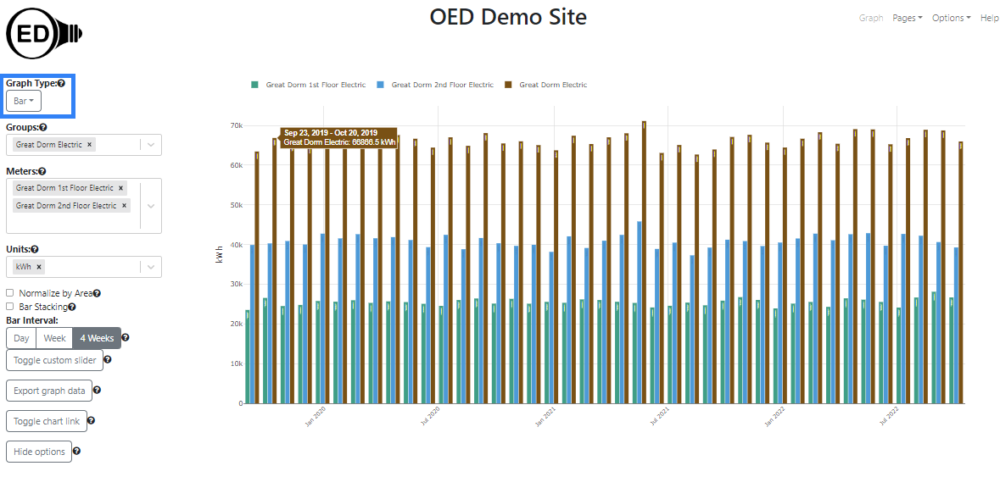
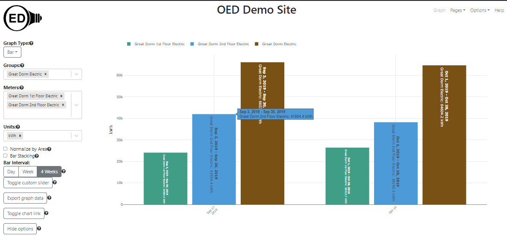
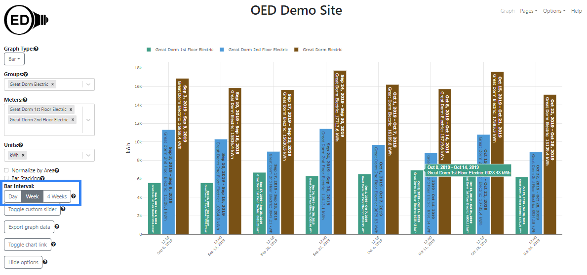
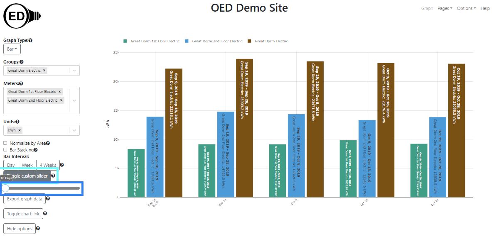
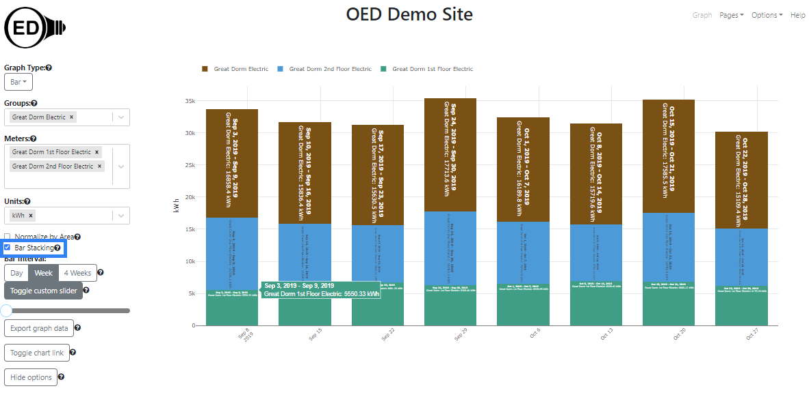
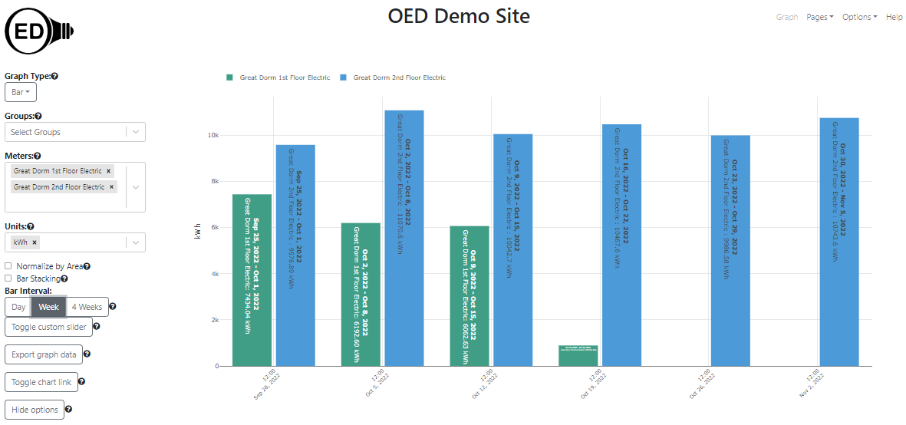
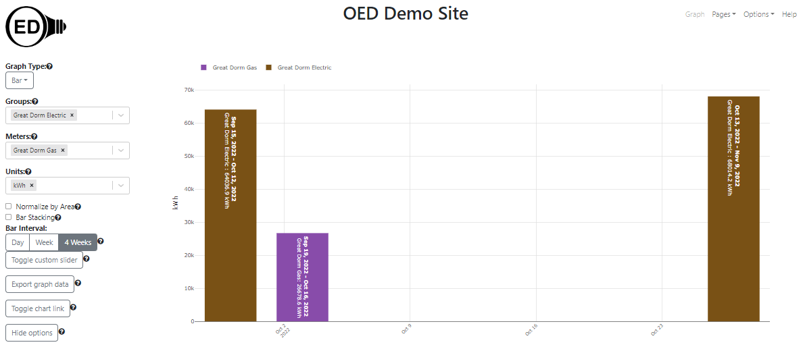

OED Documentation
Bar Graphic
Version V1.0.0
Documentation overview
User documentation
Information
Graphing
Meters/Groups
Other Features
Admin documentation
Documentation versions for this page
Overview
A bar graphic shows each meter and group as a series of fixed time interval bars showing usage across time. The following figure shows a bar graphic of two meters of the floors of the "Great Dorm" and the group "Great Dorm Electric" which contains both of these floors. (information on example data) Thus, the sum of the values of the meter bars equals the group bar value. Each bar will show the value and dates if the bar is wide enough (cannot easily see the actual values in the following figure) and you can also get a larger hover value by placing the curser over the bar (as shown). Each bar represents four weeks of data as whole days so it is the total usage of the indicated meter/group for those four weeks. Since it is total usage, the units are for energy, e.g., kWh for electricity. The x-axis gives the range of days, inclusive, that each bar represents. To get this graphic, you click the "Bar" choice (highlighted with a blue box) from the "Graph Type" dropdown menu. 
A bar graphic can show an arbitrary choice and number of meters and groups. As described below, you can control the time frame (dates shown) on the bar graphic.
Usage
One selects the meters and/or groups to graph in the usual way. OED will display each meter and group as a series of uniquely colored bars. Each bar represents the chosen time interval for the bars where hovering over a bar shows details on its value and dates included. The bars for all meters and groups are kept together for the same range of time. One can select the units, area normalization and chart link as usual.
The range of dates correspond to the ones chosen and shown on the line graphic. Note that the time range is considered the full time (not just the zoomed in time) so you will see that unless one redraws to reduce the time range. That range may not evenly fit into length of each bar. In this case, OED only shows full time bars beginning at the end time of the range (latest time) and will remove any days from the start time of the line display that do not fit. For example, in the following graphic, the dates selected in the line graphic were September 1, 2019 at 12:30 to October 29, 2019 at 10:42. OED will not display part of a day in the bar graphics (since it is per day) so the bars go through October 28, 2020 and ignores the part of the day on October 29, 2019. Since the bars are each 28 days, the last bar is October 1, 2019 through October 28, 2019. The next bar is September 3, 2019 through September 30, 2019. There are no bars before that time since the remaining data to the start is less than 28 days (only September 2, 2019 in this example). Note the x-axis label shows the middle date of each bar since there are so few but the hover over a bar shows the range of dates included. Since there are only a few bars, it is also easier to see the graphic labels each bar with the range of days and the value that mirror the hover values. 
One can select the time range in days for each bar displayed in two ways. The first involves clicking one of the predefined time ranges under "Bar Interval:" (highlighted with a blue box in the next figure) where the choices are "Day", "Week" or "4 Weeks". The figure below is the result of clicking on the "Week" choice (it was "4 Weeks" in the figures above). You can now see four weekly bars where each previous 4 weeks bar had been. 
The second way to change the bar time range is to click on the "Toggle custom slider" button (highlighted with a light blue box in the next figure) to reveal the slider. You can then click and hold the circle (highlighted with a blue box) to drag it to the number of days desired where the allowed range is 1 to 365 days. You can also use the left or right arrow keys to move the slider once it is clicked and this is easier to get to a precise value. However, you must click on the slider circle to get the new value to take effect. Note the custom slider value changes to the value of a preset range button when that is clicked. In the figure below, the "Toggle custom slider" button was clicked and the circle dragged to 10 days. 
Note that selecting a different time range on the bar graphic also changes the range on the map graphic. Similarly, selecting a time range of the map graphic also changes bar.
Bar Stacking
There are two types of bar graphics supported. The first is where each meter/group is its own bar. That is what has been discussed so far. The second is a stacked bar graphic. In this case, each time interval has a single bar with all the meters/groups represented inside this bar as sub-bars. The height of each sub-bar for a given meter/group is the proportion of the usage for this meter/group compared to the total for all meters/groups displayed. The following figure shows bar stacking where you get this option by checking the box next to the "Bar Stacking" label (highlighted with a blue box). 
Details
What happens if meters/groups have missing data
If you are only graphing meters and different meters have different times in which they have data then this impacts the bar graphic. Suppose the example data had been very different. For example, suppose the "Great Dorm 1st Floor Electric" meter stopped working in the early morning of October 16, 2022 but the "Great Dorm 2nd Floor Electric" meter continued to function normally. The following graphic shows what would happen if you graph around those dates. OED tries to keep all the bars for the same dates that are grouped together. Given this situation, OED will detect that one meter has data and use its data to determine the last bar on the right. In this example, it goes from October 30, 2022 through November 5, 2022. OED will then go back 7 days for each bar to the left since this is for the "Week" bar interval. That places a bar for October 16, 2022 through October 22, 2022. One can see that the bar for "Great Dorm 1st Floor Electric" (in green) is much smaller than the other green bars. This is because the meter stopped collecting data (and supplying to OED) on October 16, 2022 so the usage is only for part of a day in this bar range. That is why the bar is so short. This is an issue with missing data and this is how OED chose to deal with it. 
Note this is a specific example of missing meter data. If a meter does not supply data to OED in the range of a bar then the quantity will, in general, be lower than expected. It is often easier to see missing data from the line graphic. Note that groups will behave in the same way.
If you mix meters and groups that have different ranges of data then it can look different than only having either meters or groups. As shown in the next figure, the bars can now span different time ranges for the meters and groups. In this example, the group "Great Dorm Electric" in brown has the first bar on the left going from September 15, 2022 through October 12, 2022. The meter "Great Dorm Gas" in purple goes from September 19, 2022 through October 16, 2022. Note both are four weeks of time. However, the group and meter are for different times even though they are next to each other. The fact that the meter is missing data can be seen by the fact that the second bar on the right only exists for the group and not the meter. Another way to detect this issue is the choose bar stacking since bars with different time ranges will not stack. This, unfortunately, does not follow the desired pattern that all bars align. It is an unusual case that involves mixing meters and groups where there is missing data at the end of the desired range. There are technical reasons a change to address this requires non-trivial work. Therefore, OED may address this at a future time. 
Colors of bars
The color of each bar or sub-bar is the same as that used in other graphics. The color choice is described here.
Exporting graph data
You can export the data represented on a bar graphic. See the export documentation page for further information.
Why 4 weeks?
See the discussion in compare graphics about why OED uses 4 weeks rather than one month.
Graphic time range
You can set the time range of each bar to any allowed range. If the data available for a meter/group is for less time than this bar range then nothing is shown for that meter/group. For example, if one selects "4 Weeks" bar and a meter only has data for three weeks in the bar time range then the meter will not display.
Default bar type
By default, a bar graphic will begin by not being stacked. The site administrator can change this behavior so the default is stacked. In either case one can change this during usage.
Format of dates and times
See explanation in line graphics for why data and time format varies with displayed language.